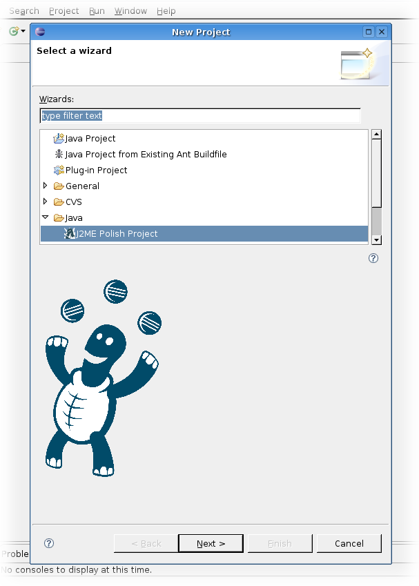
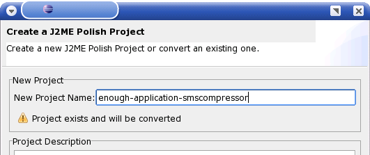
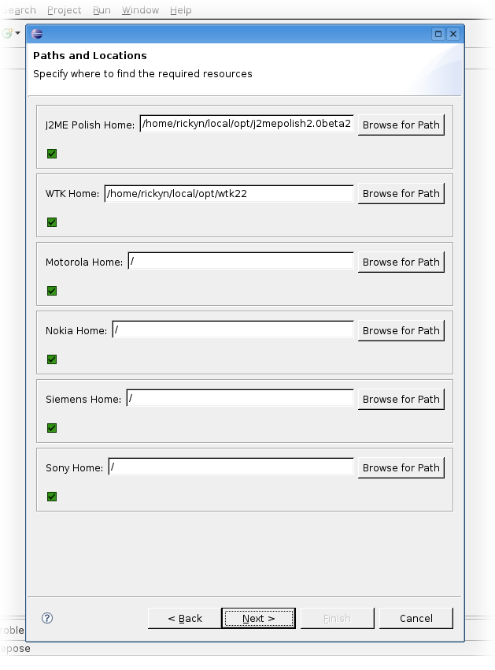
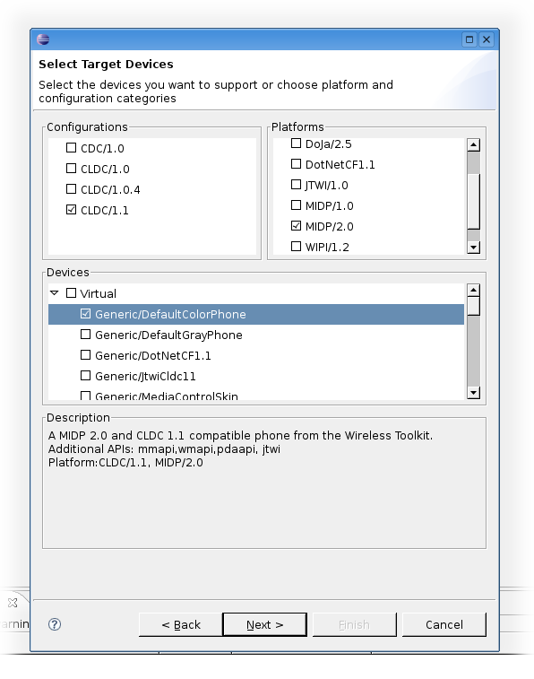

Choose the J2ME Polish Wizard from the New Project menu.
Enter the name of your existing project.
Alter the paths you want to use in this project. At least WTK Home and J2ME Polish Home must be set.
Select the devices you want to support with this project. Currently you need to convert a J2ME Polish project again for changing the target devices.
Alter the Java settings if you like. You need to adjust the source setting when you have not stored you Jasva source code files within the "source/src" folder. Note that all possible jars for the selected devices are already included in the project.

Click "Finish" to convert the project. If you already had a build.xml script, that script will be backed up and replaced by a J2ME Polish/Mepose specific script. Please copy any settings over to the new script, as Mepose relies on the given target names and property loading mechanisms.
<%include end.txt %>